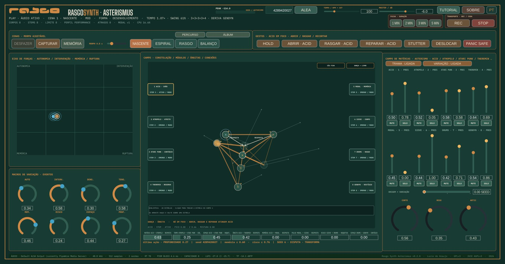

Rasgo Synth Asterismus
Asterismus es un instrumento en vivo en el que cada módulo de síntesis es una estrella. Las estrellas se relacionan, se mueven por física, cuentan sus propios ciclos y tocan. Una seed propone el cielo; el músico lo toca, cambia estrellas, dibuja relaciones y graba la pieza.
La interfaz

El cielo
Estrellas y seed
36 estrellas de tono, textura, voz y pulso, cuatro de ellas de control, que no suenan pero filtran cómo tocan las otras. La seed elige ocho entre las 28 de su sorteo, un centro tonal y un modo, una forma y los ciclos: cada seed es otra pieza; las otras ocho entran por la BIBLIOTECA.
La trama
En cada compás el cielo elige pares en foco y lo que hace cada par: respuesta, contagio, sombra, hoquetus, pedal, fricción, cadencia. La pieza recorre apertura, desarrollo, contraste y retorno, y termina en una coda.
El tiempo que respira
Un tempo elástico, un swing que viene de una órbita, compases agrupados en 3+3+2, una estrella que deriva contra el pulso, eclipses traídos por lunas calculadas.
Movimiento físico
Gravedad, resortes, péndulos, billar, magnetismo, efecto y espuma. Los choques fuertes suenan, y cada estrella suena en el estéreo donde está en la Constelación.
Cortes y cinta
En algunas partes el cielo corta — paréntesis, corte de montaje, apócrifo, decimación — y se desgasta: cinta o disco, tape stop, spin back, varispeed, según la seed.
Tocar
La Constelación
Haga clic en una estrella para ponerla en foco y arrástrela para cambiar su lugar; haga clic en un cable para elegir su fenómeno y arrástrelo para su intensidad.
Gestos y escenas
ABRIR, RASGAR, REPARAR, STUTTER, DESPLAZAR, HOLD y PANIC SAFE actúan sobre la estrella en foco. Cuatro escenas y el RECORRIDO siguen la forma.
El mezclador y la biblioteca
Un stem por estrella, con presencia, nivel, mute y solo, un filtro y envíos de eco y sala; la VARIACIÓN deja que el cielo encienda y apague estrellas y la POLIFONÍA define cuántas suenan juntas. La BIBLIOTECA cambia o fija la estrella de un cuerpo y abre el LEARN, la ficha de cada estrella.
El Eje de fuerzas
Dos puntos mueven ocho macros — autonomía, intervención, densidad, tensión, memoria, riesgo, espacio, profundidad. Con la trama, un anillo muestra la energía y la tensión del cielo.
Grabar y guardar
- REC graba la toma: un WAV estéreo de 24 bits, un WAV por cuerpo y un manifiesto JSON, en una carpeta por toma;
- PISTA · DURACIÓN graba una pieza de 1, 2, 3 o 5 minutos: la forma del cielo se ajusta a la duración y la coda llega al final;
- ▶ ESCUCHAR abre la última toma en el reproductor del sistema;
- la MEMORIA guarda ocho lugares con nombre; GUARDAR SESIÓN y ABRIR SESIÓN escriben y leen archivos .asterismus — solo parámetros, nunca audio.
Salida en el estándar común RASGO: ganancia fija, limitador con true peak 4×, techo de −1,41 dBTP, medición BS.1770 y dither en la grabación. Si el sistema de sonido se bloquea o el dispositivo desaparece, la app lo reabre y la pieza sigue desde donde estaba.
El TUTORIAL de la app lo explica todo paso a paso, y el LEARN presenta cada estrella — en español, inglés, portugués o francés.
Descargar
La versión 0.3.0 trae estrellas nuevas, los cortes y la cinta del cielo, un filtro y envíos en cada estrella, el groove de la DRUMS y el LEARN (lo que cambió está en el CHANGELOG). El instrumento sigue abierto, en desarrollo. Elige el paquete de tu sistema; los pasos están en INSTALL.
Windows
Windows 10 u 11, 64 bits — instalador (.exe)
macOS
macOS 10.15 o más reciente, Intel y Apple Silicon
Linux
.deb para Ubuntu y Debian; .tar.gz para las demás distribuciones
En la primera apertura, Windows y macOS muestran un aviso de seguridad: es lo esperado, porque la app no lleva la firma de pago de las dos empresas. La guía de instalación dice dónde hacer clic.
Hermano del Rasgo Synth Studio
El Asterismus nació del Rasgo Synth Studio, el instrumento generativo de la familia RASGO que compone y sintetiza piezas y álbumes enteros. El Studio renderiza la pieza; el Asterismus la toca en vivo. Varias estrellas del cielo son voces del Studio adaptadas al tiempo real, y la idea de la seed, de la forma y del modo álbum viene de allí.
Procedencia
El DSP de las estrellas viene del Rasgo Synth Studio, como copia fijada con commit de origen y sumas de verificación; la etapa de salida y el medidor se adaptaron de Antitotem y Navalha 2. Cada toma registra en su manifiesto la seed, las estrellas y las relaciones de las que vino.
Créditos
Lúcio de Araújo — concepción, dirección artística, música y código. Licencia GNU GPLv3 o posterior; JUCE bajo su vía AGPLv3. Créditos y avisos completos: CREDITS.md · THIRD_PARTY_NOTICES.md.
Estado
En desarrollo, abierto. Compilado y probado en Linux (39 pruebas) y tocado por el autor en hardware real; los paquetes de Windows, macOS y Linux se montan por integración continua.